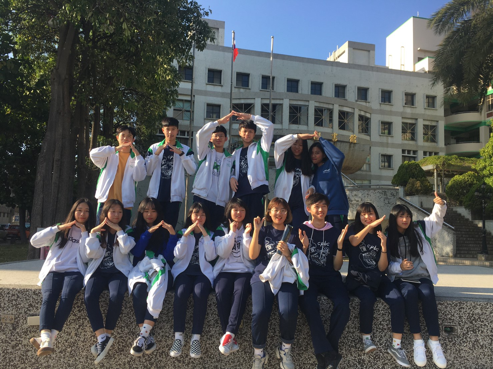
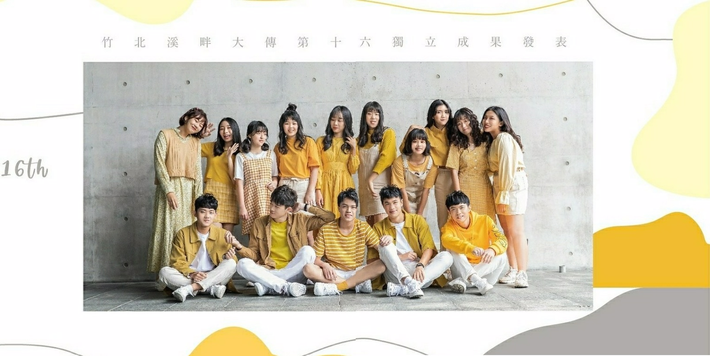
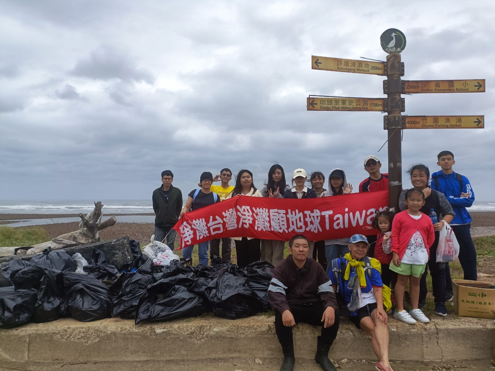

SELF-INTRODUCTION
嗨！我是劉伊凌，現在就讀於中原大學資訊管理系。我喜歡探索新知識，對我來說，解決問題的過程充滿挑戰，也樂於透過團隊合作與學習不斷成長。閒暇時，我喜歡玩寶可夢，這不僅是一個遊戲，也讓我能在現實生活中進行探索，走出門外散步運動，享受大自然或城市間的美好。除了寶可夢，我也熱衷於追劇和看動漫，不僅能放鬆心情，還能激發創意思維。未來我希望能在資訊領域發展，將所學應用於實際生活中，並對社會帶來正向的影響。
EXPERIENCE
大傳社學校期末成發總召
在高中大傳社擔任期末成發活動的總召，主要負責整體活動的籌劃與執行，包括安排表演順序、收集及整合各表演者的影片或音源檔案，以及設計活動流程，在準備過程中協調團隊，建立良好的合作關係，並提前準備應對突發狀況的方案，以面對活動當天的臨時變動，能夠迅速應變並調整流程，最終活動順利的完成。

高中社團獨立成發活動
在社團的獨立成發活動中，參與團隊的活動流程規劃與執行，負責部分器材租借、燈光與音響設備操作等技術支持工作，並協助活動的錄影與影片剪輯，和其他社員密切合作分工，確保每個細節都符合活動需求。透過這次經驗，提升了與他人溝通協調的能力，也增強了設備操作及剪輯拍攝的實務技巧。
《平安夜》｜竹北溪畔大傳第16屆獨立成發《Slow》｜驚悚片

管理學課程——淨灘活動
在管理學課程中，我參與且協助一場淨灘活動，藉此實際了解海洋污染的成因及其對生態的影響。這次活動讓我對環境保護有了更深的體會，同時也強化了團隊合作的意識。活動結束後，我更加認識到環境永續需要每個人的參與，並期望在未來能持續為生態保護做出貢獻。
淨一個乾淨的灘

SKILL
Python
Java
HTML
Accounting
Graphic Science
Photoshop
LANGUAGE
English
Taiwanese
Hakka